Clicking Post and Update Order will close the Match PO window, post the invoice (the Purchase Invoice window also closes), and update the Received quantities for the items that appear on the original purchase order (if this completes the order, it will be moved to the Bought tab).
Services are enabled under File>Manage Services (see MoneyWorks Services and Maintenance).
In a perfect world, no one would ever make a mistake, customers would always pay the correct amount before it was due, and there would be no bad debts.
But, even using a superlative accounting system, things do go wrong. To help correct problems quickly and accurately, MoneyWorks has a number of special adjustment commands. It is better (and easier) to use these than attempt to enter a general ledger journal.
|
|
|---|---|
|
|
|
|
|
|
|
|
The Adjustments commands appear in the Adjustments submenu in the Command menu, and are also accessible from the Adjust toolbar button.
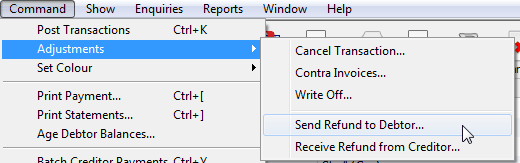
With these, you can handle all manner of adjustments including bad debt write- offs, prompt payment discounts, correction of incorrect entries, bounced cheques, cancelled cheques, and so on.
Use Cancel Transaction to cancel (reverse) a posted transaction. Unposted transactions cannot be cancelled—you can just delete them.
You cannot cancel a transaction that has already been cancelled, nor can you cancel a cancellation (i.e. a transaction created by the Cancel Transaction command). If you need to do this, you should duplicate the original transaction.
Cancelling Payments: When you cancel a payment related to a sales or purchase invoice, the cancellation process adjusts the debtor or creditor balance, and creates and posts the appropriate reversing cash transaction. Invoices paid by the payment will reappear in the Receivables or Payables list.
Cancelling Invoices: Invoices can be cancelled (not Cashbook) only if they are unpaid (either in full or in part)1. If you cancel an invoice, a credit note (negative invoice) is created and posted. Both transactions will be marked completed so neither will appear in the Payables or Receivables lists.
If you cancel an invoice that has been processed for GST on an invoice basis, the cancellation will be processed for GST the next time you print a GST report. If the cancelled invoice was not processed for GST, then neither it nor the cancelling invoices will appear on the GST report.
The reference number (invoice or cheque number) of the cancellation will be the same as that of the original, but with a “-” (minus sign) appended to it.
To cancel a transaction:
Choose Command>Adjustment>Cancel Transaction or press Ctrl—/⌘— (hyphen), or click the Cancel Toolbar button
The Cancel Transaction window is displayed.
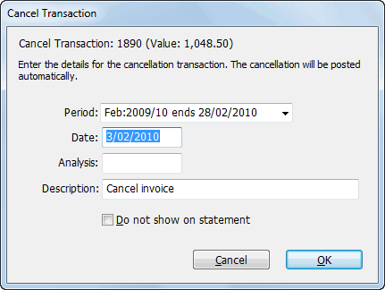
If the transaction cannot be cancelled an alert will be displayed.
If you used the Cancel command without first highlighting the transaction to be cancelled, a list of available transactions will be displayed. Locate and highlight the transaction in this list and click Continue to display the Cancel Transaction window.
By default, this has the same settings as the transaction you are cancelling. However if the period of the original transaction is not open, it will default to today’s date and the current period.
It is a good idea to use the Description to say why the transaction is being cancelled (e.g. “Cheque bounced”, “Returned Goods”).
Click OK or press enter
A reversed copy of the transaction will be created and posted, thus effectively cancelling out the original transaction.
If you have a manually-entered credit note, you can contra it against an invoice for the same debtor or creditor. This is not available in MoneyWorks Cashbook.
You cannot contra an invoice received from a creditor against an invoice sent to a debtor, even if the debtor is the same as the creditor.2
A list of outstanding credit notes will be displayed.
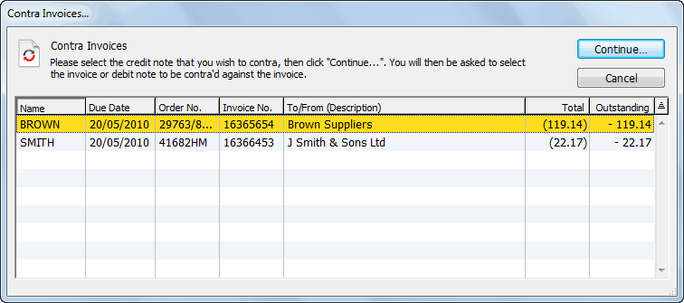
A list of unpaid invoices for the debtor or creditor is displayed (or an alert is given if there are no eligible invoices to contra against).
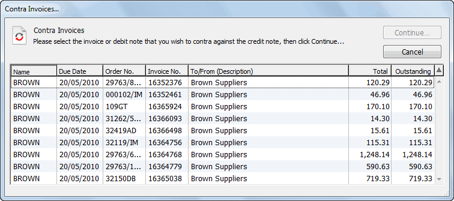
You will be asked for confirmation.
At least one of the two invoices will be completed by the contra operation. If the invoices have equal (and opposite) values, both will be completed by the contra operation. Completed (i.e. fully-paid) invoices are removed from the payables or receivables list.
Note: If the two invoices involved have proportionally different GST/VAT amounts, a zero-valued Payment or Receipt record will be created. This transaction is required for proper GST processing under a payments basis.
Note: A credit note can be effectively “contra-ed” against a number of invoices from the same Debtor/Creditor by generating a zero-valued payment.
Contra shortcut: If you are adventurous, you can also contra transactions directly from the main transactions list.
It is normally easier to do this from the Payables tab (for purchase invoices) or the Receivables tab (for sales invoices). One of the invoices must be negative (i.e: a credit note), and must be to the same customer/supplier.
The Contra Invoices confirmation is displayed.
Click Contra
Use the Write Off command (not available in MoneyWorks Cashbook) when you need to complete an invoice that will not otherwise be paid. For example:
It is a bad debt and you need to write it off for tax purposes
The outstanding balance is uneconomic to complete. It is better to use the Write Off option when recording the receipt—see Write Off Option—use the following method only if you forget to do it there.
To Write off one or more invoices:
You can highlight more than one invoice in the list by shift or control/ command clicking.
The Write Off Invoices dialog box is displayed.
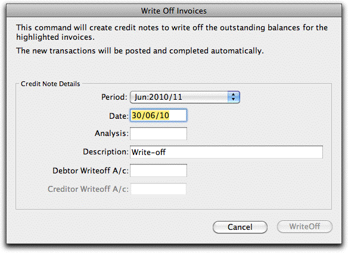
MoneyWorks “writes-off” an invoice by creating a credit note (negative invoice) for the outstanding balance of the invoice, and then contra-ing this against the original invoice.
If you are writing off Sales Invoices, you will be required to enter an account code for a Debtor write off account (e.g. a bad debts account). Similarly, if you are writing off Purchase Invoices, you will be required to enter an account code for a Creditor write off account. If you have selected both types of invoice for writing off, you need to specify one of each type of write off account.
If you used the Write Off command without first highlighting the transaction to be written off, a list of available transactions will be displayed. Locate and highlight the transaction in this list and click Continue to display the Write Off window.
Click WriteOff
The credit notes will be created, and the written-off invoices will be removed from the Payables or Receivables lists.
Note: If the original invoice contained GST, this is pro-rated over the amount written off and included in the credit note so that GST is correctly accounted for. It does this regardless of the tax code associated with the write off account. For this reason it is a good idea for the tax code of the
write-off account to be the same as those used on the invoice, otherwise the transaction may be flagged as an anomaly on your GST report. Note also that the write off account cannot have a tax code of “*”.
Use the Return Refund to Debtor3 command (not available in MoneyWorks Cashbook) when a debtor has overpaid you or when you have issued a credit note to a debtor and wish to clear their credit balance by paying them.
A list of debtors who have outstanding credit notes or overpayments will be displayed:
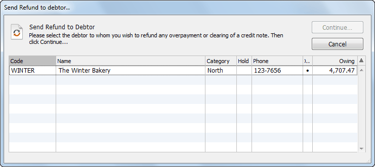
Note that the Owing column displays the total customer balance, not the amount of individual credits.
The Return Refund dialog box is displayed.
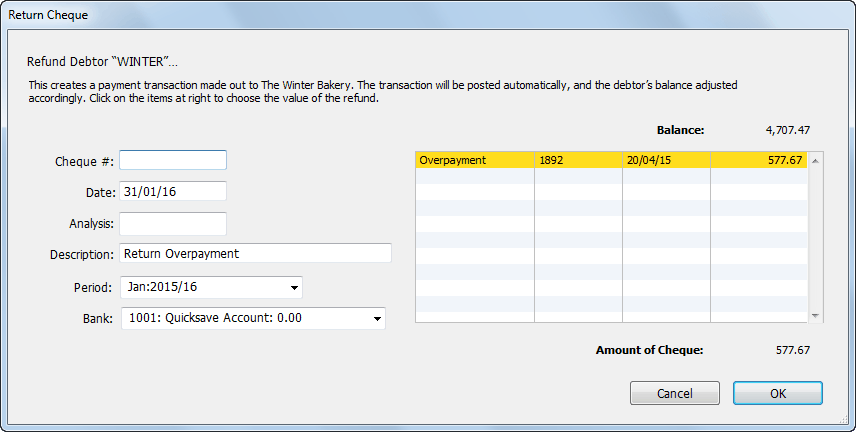
Any outstanding credit notes plus any unallocated overpayments that have been received from the debtor will be displayed and highlighted in the list on the right-hand side of the dialog box.
The items that you click on will be unhighlighted and the refund amount will reduce accordingly—click on an item again to rehighlight it. If the amount you want to refund is not represented exactly by one or more of these entries, you will have to enter a special credit note/debit note pair and use the new credit note here.
You can also change the date, cheque #, analysis and description.
Click OK
A Payment transaction made out to the debtor will be created and posted. It will credit the nominated bank account and debit the Accounts Receivable control account for the debtor. If paying the refund by cheque, it will need to be hand-written.
Note: Overpayments, by definition, do not include GST/VAT, and hence any payments you return will not include any GST/VAT. Payment returned for a credit note will include any GST/VAT specified in the credit note.
The Receive Refund from Creditor4 command is the complement of the Return Refund to Debtor command (and is not available in MoneyWorks Cashbook). Use this command where you have overpaid a creditor (supplier) and are processing the refund; if the creditor invoiced you incorrectly and is now making good; or if the amount that you hand-wrote a cheque for was in excess of the amount that you entered for the payment in MoneyWorks.
You will need a credit note (i.e. negative Purchase Invoice) for the value of the cheque that you have received from the creditor—if you have deliberately overpaid (see Overpaying a Creditor), MoneyWorks will have created this for you, otherwise you will need to create it yourself. If the creditor has sent you a cheque with an incorrect amount (not enough, for example), you should enter a credit note for the amount that they have sent you, and another for the amount that they still owe you—this is because MoneyWorks will only accept complete payments on creditor credit notes.
To receive a cheque from a creditor:
A list of creditors who have outstanding credit notes is displayed.
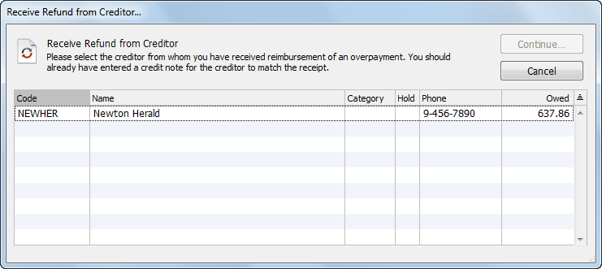
Note that the amount shown is their total balance, not the credit amount.
The Receive Refund from Creditor dialog box is displayed.
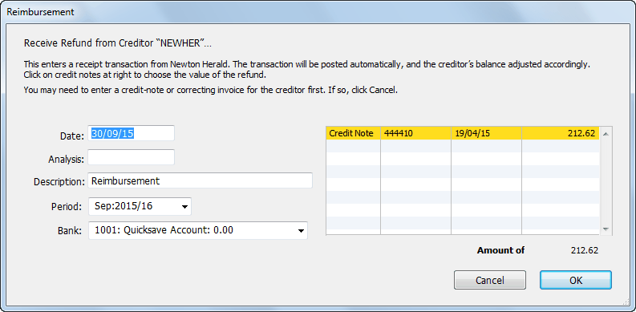
If no credit note exists for the creditor, an alert is given. You must enter the credit note before you choose Receive Refund from Creditor.
Any outstanding credit notes for the creditor will be displayed and highlighted in the list on the right-hand side of the dialog box.
The items that you click on will be unhighlighted and the cheque amount will reduce accordingly. You can click on an item again to rehighlight it.
If the credit notes in the list do not correspond to the amount of the cheque, you will need to enter a correction (either another credit note, or a normal positive invoice).
Click OK
The Cash Receipt will be created and posted. This will debit the nominated bank account and credit the creditor’s Accounts Payable control account.
The GST component of this cheque will correspond to that specified in the credit note.
Use journal transactions to transfer balances from one account to another, for accruals and for end of year adjustments.
Note: Avoid using journals to correct entries made with other transaction types; instead use the Cancel Transaction command to cancel the incorrect transaction and then re-enter a correct one. As well as being more difficult to work out (unless you are an accountant), journals are treated differently for the purposes of GST and cashflow reporting.
Note: You cannot use a journal transaction to make adjustments to the Accounts Receivable or Accounts Payable control accounts. If you need to make adjustments of this kind, use the Adjustments commands (Cancel Transaction, Contra Invoices, Write Off etc.), or use an invoice transaction.
Note: You cannot attach a job code to a journal detail line.
If necessary set the transaction Type to Journal
Pressing Alt-Shift-5/Ctrl-Shift-5 is a keyboard shortcut for this
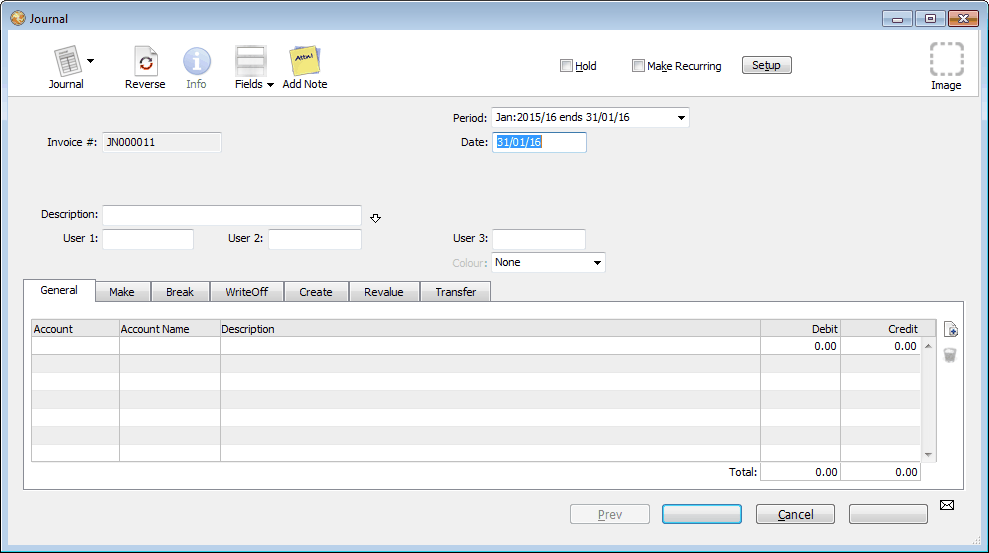
The Reference number is set automatically, and cannot be altered5.
For information on stock journals see Stock Journals.
Type the date for the Journal into the Date field
If necessary you can change the period into which the journal is to be posted using the Period pop-up menu
Enter a description for the journal into the Description field
Press Ctrl-tab (Mac) or Ctrl-` (Win) to go to the first detail line
Enter the first account code to be debited or credited into the Account field
Enter a description into the Description field
Click or Tab into either the Debit or the Credit fields and enter the amount to be debited or credited to the account
Press the ↩︎/return key to create a new detail line
Enter the details of the next account to be credited or debited.
If you accidentally create extra detail lines, they will be removed automatically when you save the transaction provided there is no account code in the Account field.
The OK and Next buttons remain dimmed until the total of the debits is equal to the total of credits. A tooltip will show the amount needed to balance the journal.
The sum of the amounts in the debit column must be equal to the sum of the amounts in the credit column. You may not enter an amount into both the debit and credit column on the same line.
2 To contra a sales invoice against a purchase invoice (or even two invoices from different debtors/creditors), create credit notes for both invoices. These will be for the same amount, and will both be coded to the same suspense account. Contra these against their respective invoices.↩︎
3 This was Return Cheque to Debtor in MoneyWorks 6 and earlier↩︎
4 This was Receive Cheque from Creditor in MoneyWorks 6 and earlier↩︎
5 The Journal Number is sequential. However if you create a journal and then delete it without posting it, it will leave a gap in the sequence.↩︎
Note: To automatically add one more line to make the journal balance, click either of the totals in the footer. If the debits and credits are not already equal, MoneyWorks will add a line for you to make them so. You just need to add the relevant account code. (MoneyWorks 9.1.5 and later)
Some accounting systems allow you to do a “one legged” journal (one that does not balance) in order to correct an out-of-balance condition in the general ledger. Proper accounting systems (such as, for example, MoneyWorks) don’t let your ledger get out of balance, and hence don’t need one legged journals.
1 If the invoice has been paid, you can still effect the desired result by manually entering a credit note. To do this, use the Duplicate command to duplicate the invoice, then use the Reverse command to reverse it before saving it.↩︎
Reports are arguably one of the most important aspects of your accounting system. They are used to measure historic performance, control current activities, give compliance information, provide current management information and plan for the future. MoneyWorks comes with a (possibly dauntingly) large number of reports, more than you will probably ever need.
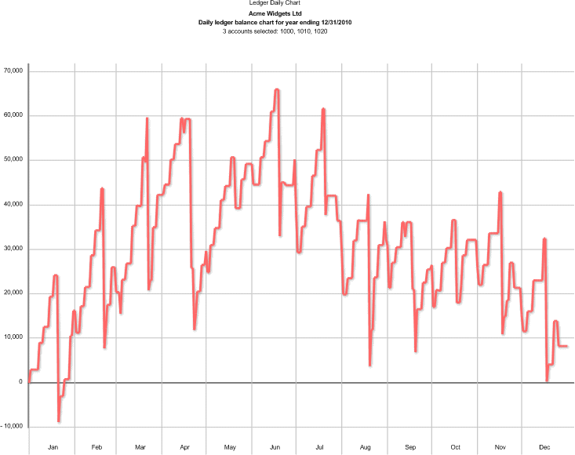
Sometimes a picture is worth a thousand words. The Daily Ledger report (In General Ledger) for example shows the daily balance in the nominated GL accounts. Here it is showing the daily bank balances for Acme Widgets.
Depending on what you are trying to achieve, some of the main reports are:
Cashflow Report (where did all your cash go to);
Profit and Loss Comparison (monthly, budget, year to date);
Balance Sheet;
Statement of Cash Flows;
Variety of Profit and Loss reports for different breakdowns and comparisons, including five year comparisons.
Cash Projection (short term forward cash position);
Cash Forecast (15 month cash flow forecast);
Profit Financial Year Forecast (uses A and/or B budget for future periods);
GST/VAT/HST report and Guides;
EC Sales report (UK);
Taxable Payments (Australia);
IRAS IAF report (Singapore);
Sales Tax report (USA/Canada);
Aged Receivables/Payables;
Backorder Summaries (which items are on backorder and to/from whom);
Committed Stock (what stock items are committed in sales/purchases);
Committed Budget (the effect of outstanding purchase orders on budget)
Executive Summary (summarised information and key ratios)
Bill of Materials Report (for exploded costings)
Bill of Materials Costing (for summarised)
Trial Balance
Ledger Report
Backdated Transactions
Bank Reconciliation Status
Daily Transaction Summary
Overpayment Report
Recurring Transactions
Tax Coding
Transaction Postings
Chart of Accounts, Department Listing reports to display chart structure
Customer Sales (who has purchased which items);
Sales/Purchases over Time (by customer/supplier);
Item by Customer/Month (which items have been sold to whom);
Supplier by Item (what items have we purchased from which suppliers);
Top Sales/Purchases (top customers/suppliers for given time interval);
Commission Report (how much commission do we owe to whom).
Printable versions of the Navigator dashboard panels
MoneyWorks comes with a large number of standard reports which are stored as separate files in the Reports folder in the MoneyWorks 8 Standard Plug-ins Folder. These reports, and ones that you have created in MoneyWorks Gold and stored in the Reports folder in the MoneyWorks Custom Plug-ins1 folder, appear in the Reports menu. Commonly used reports that pertain to a selection of information displayed in one of the lists will also appear in that list’s sidebar.
When you print a report, MoneyWorks displays a Report Settings window. This makes it possible to print one report in many different formats. For example you can summarise a report by setting the Sort pop-up menu to one of the Condense options, or the same report can be subtotalled by setting the pop-up to one of the Subsummary options. The same report can also be printed for the entire organisation, or for individual cost centres or segments by using the Breakdown options.
Note: Access to the standard reports in MoneyWorks Gold and Datacentre is controlled by user privileges. For example, if a user doesn’t have the privilege to do an Account Enquiry, they will not be able to access any of the general ledger-type reports.
MoneyWorks Gold also allows you to design your own reports. These reports are the key to an accurate and timely awareness of the state of your business. They can include as little or as much detail about ledger balances, budgets, customers, products etc. as you wish — see Custom Reports
Printing Reports
Reports can be printed in a number of ways2:
directly from the Reports menu
from the Index to Reports window
by clicking on the report in a list’s sidebar
by clicking the Refresh icon in the Preview toolbar
in Gold, by opening the report and clicking the Test button
When you print a report a Report Settings window will be displayed. The format of this, and the options available in it, depend on the type of the report.
The Settings window for the report is displayed—the options available in this depend on the selected report.
Alias Reports are equivalent to printing from a list, but without needing to open the list.
For Built-in and Custom reports see Standard and Custom Reports;
For Analysis Reports see Analysis;
For Report Chains see Settings for Report Chains.
Choose the Output to (Print, Preview, etc)
For further information see Output Settings
To prepare the report, click the Print, Send, Preview or Save button
The button name is determined by the output to settings.
Note: Make sure you do a Page Setup the first time you print a report—this information is printer-specific, and may need to be set for your printer.
When you print a report, the Report Settings dialog box is presented, allowing you to specify run-time options (such as the report period, level of detail, whether to include the effects of unposted transactions etc). The available settings depend on the design of the report.
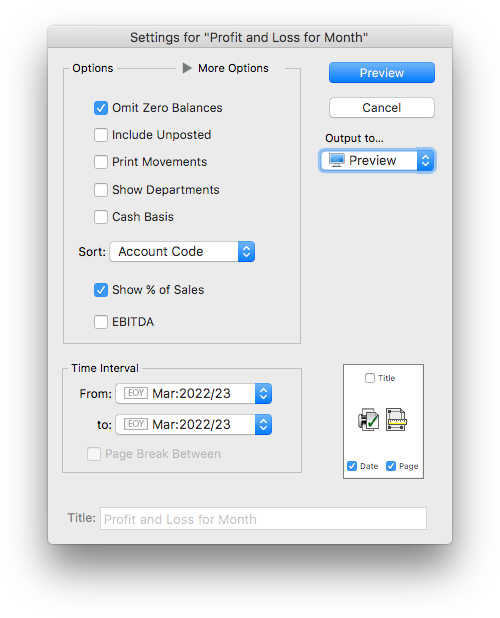
The options that you set in this dialog box (with the exception of the period range and Cash Basis) are saved with the report after it is printed and will be the default settings next time you print the report.
The standard report setting options are:
Omit Zero Balances: Accounts with zero balances/movement for the report period do not print out in the report.
Include Unposted: Unposted transactions for an account will be added into the account balances in the report, allowing an up-to-the-minute summary of accounts. Because these transactions may be modified or changed before they are finally posted, the balances in the report may change—a message to this effect is shown at the bottom of each page.
Print Movements: Prints summary details of all transactions for each account that appears in the report in the specified period—use this if you want to find out how the figures on the report are derived. Transaction details cannot be printed from purged periods as they have been removed.
Show Departments: In Gold only, when this option is on, each Account- Department combination appears on a separate line in the report. If this option is not turned on, the balances for each department are added and appear as a total figure for the base account code.
Sort: Used to sort or summarise the report. Accounts in each part of the report can be sorted by Account Code (the default), Account Description, or by Accountant’s Code (if you choose Accountant’s Code, the accounts in each part will be consolidated by the value in the Accountant’s Code field, and sorted by this).
Alternatively you can use this to print the report in a condensed form, or as a series of subsummaries, as described below.
Cash Basis: If set, the report will be printed on a cash basis. Income and expenses will show in the period paid, not the period invoiced.
EBITDA: Where available, setting this option will separate out Interest, Tax and Depreciation/Amortisation from Profit and Loss reports. This is based on the EBITDA settings in the underlying Account record.
Time Interval: The time interval for which the report will print data is determined by the pop-up menu(s) containing period names. It is possible to report on any of the periods in the system.
Where there are two period menus, you can print the report for a range of periods. A separate report is printed for each period in the range. Choose the first period from the From Period pop-up menu and the last period from the To Period menu. To print only one period, set both of these to the same period.
The Page Break Between check box allows you to print the report for each period on a new page.
Output to: Determines whether the report will be printed, previewed, emailed etc.—see Output Settings.
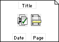
Page Setup & Margins:Allows you to specify the Page Setup and the Margins, and also indicate whether you want the Title, Date and Page printed on the report—see Page Settings.
Title: You can enter a title that will be printed on the report here. This is not available if the Title option is turned off.
The Subsummary mechanism collapses or subtotals account/ledger parts in a report. In its simplest form, this can provide a collapsed version of the report (e.g. collapsed to first 2 characters of general ledger code).
However because it can operate in dimensions other than just the account code, the subsummary mechanism is much more powerful than just collapsing reports. For example account ranges may be summarised by Account, Department, Categories (1-4), Classification, Accountant's Code, Colour or Type.
Summaries done by ledger code can condense or subtotal using just the first few digits of the code.
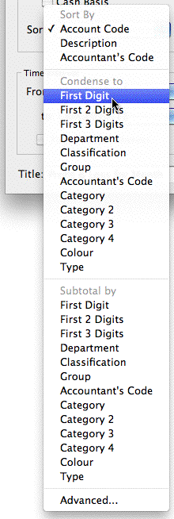
Condense to: Condenses the report to the selected level, in effect summarising the report and hiding the detail. The report will be shorter.Subtotal by: Maintains the report detail, but has subtotals at each level. The report will be longer.
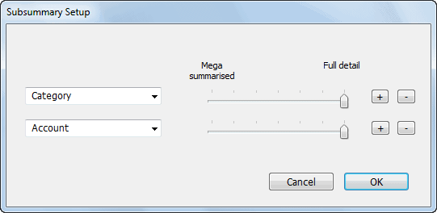
Advanced: The Advanced option opens the Subsummary Setup window, allowing multiple levels (up to five) of subsummary within the one report.
Set the slider to the required detail
Mega-summarised will summarise by just the first character, whereas Full Detail will not summarise.
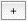
button to add more levels and repeat the process.Up to 5 levels of subsummary may be applied at once.
Click the
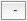
button to remove a level.The effect of the condense and subtotal options is shown in the following table. The report at left is prepared by Account Code (i.e. no subsummaries). The same report is shown Condensed and Subtotalled by First Digit and First 2 Digits.
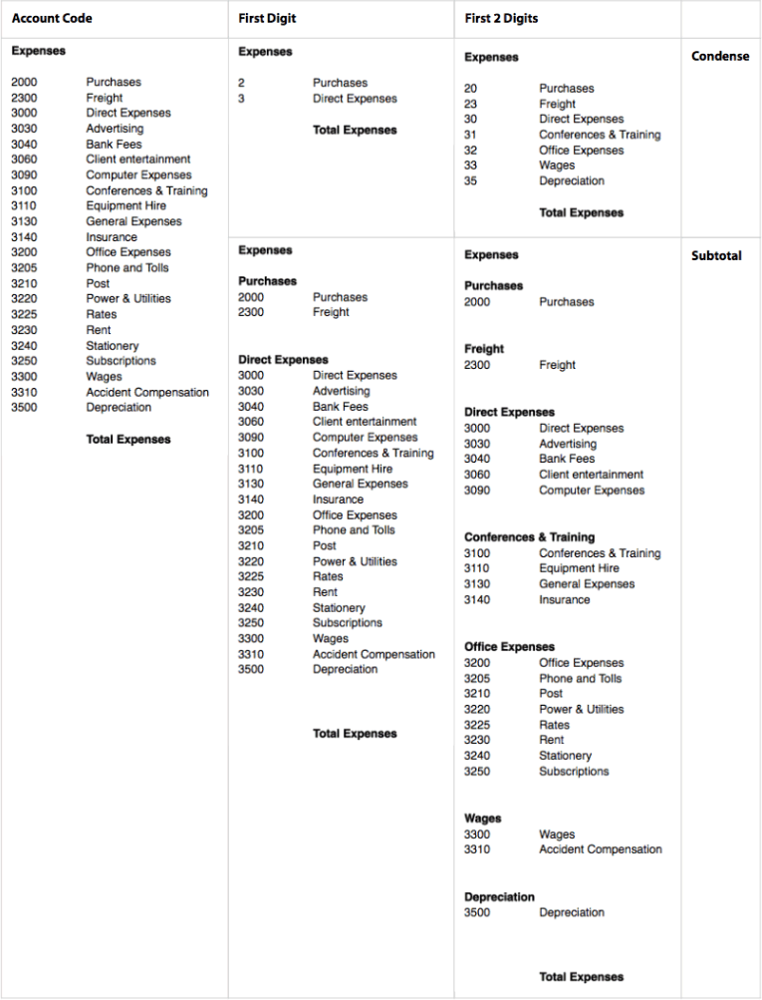
In Gold, if you use departments, categories or classifications, you can report on one or more of these by selecting it from the Breakdown list. This is hidden unless you tweak the More Options control.
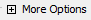
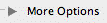
More options Windows More options Mac
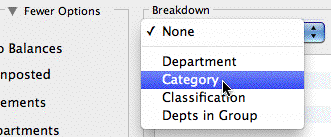
Choose the type of breakdown that you want from the choices in the pop-up menu—Department, Category, Classification or Group.No Breakdown: The report is prepared for all applicable accounts.
Department: A separate report is prepared for each department that is highlighted in the list. Only departmentalised accounts having these department(s) in their department group are included, and then only the specific sub-ledger for that department. Note that, as of version 9.1.9, there are separate Department reports (in Reports>Profit and Loss) for reporting on departments in columnar format.
Category: A separate report is prepared for each of the highlighted account categories. Only accounts in the category are included.
Classification: A separate report is prepared for each of the highlighted department classifications. Only departmentalised accounts having one or more departments with those classifications in their department group are included, and then only the specific sub-ledgers for those departments in the department classification.
Group: A separate report is printed for each department in the highlighted group(s). This is equivalent to a department breakdown where all the departments in the group have been highlighted, but has the advantage of automatically including any new departments added to the group since the report was created.
When you choose a breakdown, MoneyWorks will list all of the departments, categories, classifications or groups (as appropriate) in the Breakdown list.
Highlight the ones for the report by clicking on them.
Use the All check box to highlight all codes in the list. When set, any codes that are added to your chart of accounts before you next print this report will be added to the set of highlighted codes automatically.
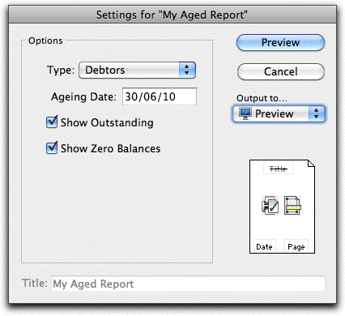
Reports with Customised SettingsReports can have custom controls in addition (or instead of) the standard ones. These will depend on the intent of the report. For example the Settings window shown at right is for a customised aged debtors/creditors report. It allows the option to age by due date (instead of transaction date), and has a pop-up menu for choosing whether to age debtors or creditors.
Tip: More complex standard reports (such as the Backorder Summaries) have a Documentation option. If this is turned on, documentation about the report will be printed on the first page, with the body following on subsequent pages.
A report chain is a predetermined sequence of reports which can be printed as if it were a single report. It has different Report Settings as it uses the settings stored for each report in the chain.
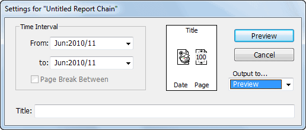
The Time Interval is set in the same manner as for other reports.